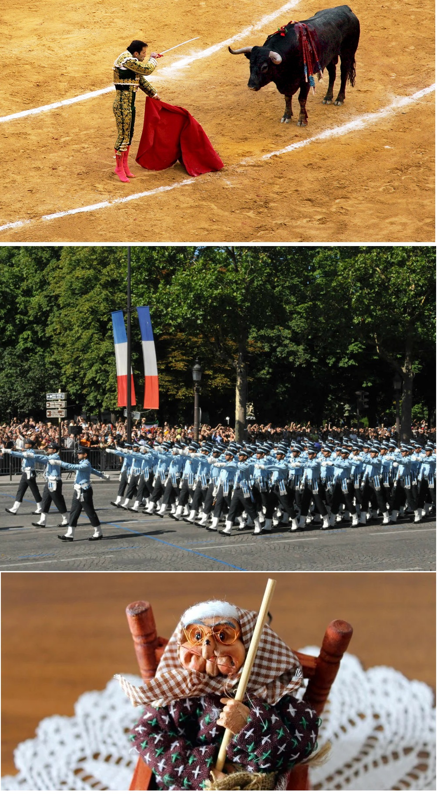
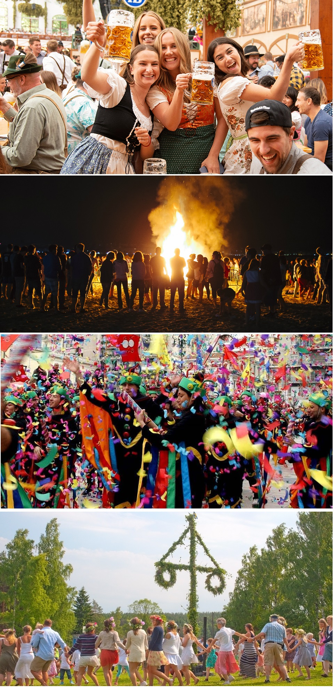
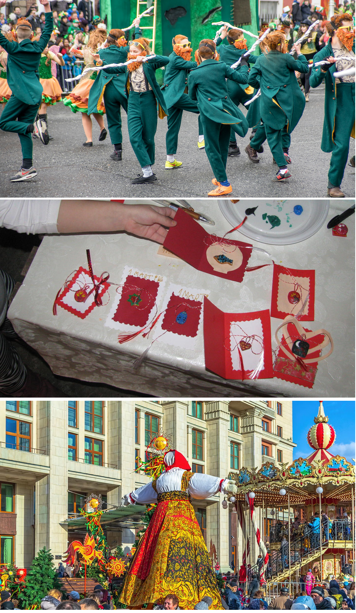

Europa este un continent cu o istorie bogată și diversitate culturală remarcabilă, reflectată în multitudinea de tradiții și obiceiuri care variază de la o regiune la alta. Aceste tradiții sunt păstrate cu mândrie de comunitățile locale și oferă o perspectivă fascinantă asupra modului în care diferite culturi europene celebrează viața, natura și moștenirea lor istorică.

În Spania, tradiția corrida, sau luptele cu tauri, este una dintre cele mai cunoscute și controversate. Aceste evenimente,
care au loc în special în timpul festivalurilor locale, implică matadori care înfruntă tauri într-o arenă. Corrida este considerată de
unii o formă de artă și o parte integrantă a culturii spaniole, deși a atras critici puternice pentru cruzimea implicată.
În Franța, tradiția de a sărbători Ziua Națională a Franței pe 14 iulie, cunoscută sub numele de „Bastille Day”, marchează începutul Revoluției
Franceze și căderea Bastiliei. Evenimentul este celebrat cu parade militare, spectacole de artificii, baluri publice și diverse festivități
comunitare. Este o zi de mândrie națională și unitate, reflectând valorile de libertate, egalitate și fraternitate.
În Italia, tradiția „La Befana” este un obicei de Anul Nou și Epifanie. Potrivit legendei, Befana este o bătrână care zboară pe o mătură și
aduce daruri copiilor cuminți în noaptea de 5 spre 6 ianuarie, asemănător cu Moș Crăciun. Copiii lasă ciorapi pentru a fi umpluți cu dulciuri
sau cărbuni, în funcție de comportamentul lor din anul precedent.


În Germania, tradiția „Oktoberfest” din München este unul dintre cele mai mari și celebre festivaluri de bere din lume.
Început în 1810, festivalul durează 16-18 zile, atrăgând milioane de vizitatori care se bucură de bere, mâncare tradițională,
muzică și parade. Oktoberfest este un simbol al ospitalității bavareze și un eveniment cultural major.
În Marea Britanie, tradiția „Bonfire Night” sau „Guy Fawkes Night” este sărbătorită pe 5 noiembrie, comemorând eșecul Complotului
Prafului de Pușcă din 1605. Evenimentul include focuri de artificii, arderea efigiilor lui Guy Fawkes și focuri de tabără. Este o
ocazie de a reflecta asupra istoriei și de a se bucura de festivități în aer liber.
În Grecia, tradiția „Apokries” este echivalentul grecesc al Carnavalului și are loc înainte de începutul Postului Paștelui. Aceste
festivități includ parade de costume, baluri mascate și diverse activități de stradă. Apokries este un moment de bucurie și eliberare,
oferind oamenilor șansa de a se exprima liber și creativ.
În Suedia, tradiția „Midsummer” (Midsommar) este o celebrare a solstițiului de vară. Oamenii se adună în aer liber pentru a dansa în jurul
stâlpului de Midsummer, cântă cântece tradiționale și savurează mâncăruri specifice, cum ar fi heringul murat și cartofii noi. Midsummer este
un simbol al luminii și al fertilității naturii.
În Irlanda, tradiția de a sărbători „Saint Patrick's Day” pe 17 martie este una dintre cele mai cunoscute festivități irlandeze, marcând
ziua sfântului patron al Irlandei. Sărbătoarea este caracterizată de parade colorate, muzică tradițională, dansuri și purtarea hainelor
verzi. Saint Patrick's Day a devenit un simbol al mândriei și identității irlandeze în întreaga lume.
În România, tradiția „Mărțișorului” este celebrată pe 1 martie și marchează începutul primăverii. Oamenii își oferă unii altora mărțișoare,
mici amulete legate cu șnur roșu și alb, care simbolizează reînnoirea și prosperitatea. Aceasta tradiție este o formă de a ura noroc și sănătate
în noul sezon.
În Rusia, tradiția „Maslenitsa” este un festival de iarnă care are loc cu o săptămână înainte de începutul Postului Mare. Sărbătoarea
include parade, spectacole de teatru, cântece și dansuri tradiționale, precum și consumul de blini (clătite rusești). Maslenitsa este un
moment de bucurie și celebrare, marcând sfârșitul iernii și începutul primăverii.

Aceste tradiții și obiceiuri europene reflectă diversitatea culturală a continentului și oferă o privire asupra modului în care diferite popoare își celebrează istoria, natura și comunitatea. Ele aduc oamenii împreună, creând un sentiment de continuitate și identitate în fața schimbărilor constante ale lumii moderne.